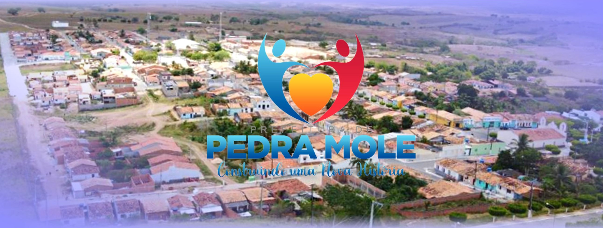

Pedra Mole
História
A partir de 1700, a colonização e povoamento da Capitania de Sergipe expande-se pela zona sertaneja. Segundo a Enciclopédia dos Municípios Brasileiros, a primeira incursão na área territorial de Pedra Mole foi feita por Manoel Alves da Silva, que obteve por alvará, de 25 de outubro de 1713, a sesmaria de uma légua de comprimento por três de largura, começando no Rio Salgado, que deságua no Rio Vaza-Barris.
Em 1890, a família francesa Ettingers fundou na região uma fábrica de beneficiamento de algodão. O exemplo e o entusiasmo dos dois pioneiros, Gootchaux Ettinger e seu sobrinho Gabriel Lazar Ettinger, foram atraindo pessoas da circunvizinhança que desejavam prosperar.
O desenvolvimento foi relativo, por causa da falta de transportes regulares e rápidos que permitissem o escoamento da produção para os mercados do litoral. Até hoje Pedra Mole sofre por falta de uma rodovia asfaltada, já que é a única cidade que tem acesso somente por estrada de barro, mesmo assim em péssimas condições.
Pedra Mole, como suas cidades vizinhas, deixou de se desenvolver também pela falta de chuvas e com os processos rudimentares da agricultura que reduzem e encarecem a produção.
Os pedra molenses têm várias versões sobre o surgimento do nome da cidade. Uma delas é que alguns moradores encontraram pedras com a marca da pata de um animal e de um pé de uma pessoa, e disseram que as pedras eram moles. Outros acreditam que viajantes marcavam como ponto de encontro o lugar das pedras moles. Sabe-se, com certeza, que onde hoje é a cidade havia pedras relativamente fofas, mas que hoje não existem mais.
fonte: https://cidades.ibge.gov.br/brasil/se/pedra-mole/historicoDados Gerais de acordo com o IBGE
| Prefeito (a) | Jose Augusto De Andrade |
| Vice-Prefeito (a) | Edmilson De Carvalho Barros |
| Site do município | https://pedramole.se.gov.br/ |
| Área territorial | 82,211 km² |
| População estimada | 3.309 pessoas |
| Densidade demográfica | 36,26 hab/km² |
| IDHM | 0,593 |
| PIB per capita | R$ 13.134,62 |